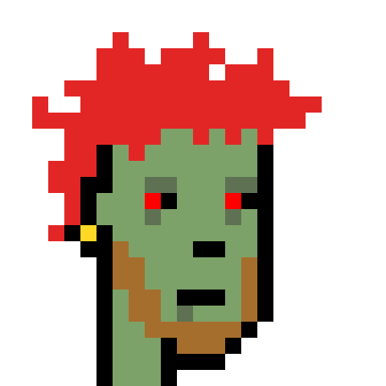

Qui suis-je?
Mon nom est John et j'ai 20 ans! Je vais à l'ecole UCLA en Californie et j'étudie le codage! J'aime aussi écouter de la musique, acheter des vêtements et m'amuser avec mes amis! J'ai attaché une image d'eux en dessous.

Mon nom est John et j'ai 20 ans! Je vais à l'ecole UCLA en Californie et j'étudie le codage! J'aime aussi écouter de la musique, acheter des vêtements et m'amuser avec mes amis! J'ai attaché une image d'eux en dessous.

Quand je suis à la maison et que j'ai du temps libre, j'aime aller sur YouTube et regarder des vidéos sur plusieurs sujets différents comme le codage, le cuisinage, etc.
Accédez au site
L'une de mes activités préférées est d'écouter de la musique. Pour seulement 10 $ par mois, je peux écouter n'importe quelle chanson sur le site de Spotify.
Accédez au siteChaque fois que j'ai besoin de nouveaux vêtements pour l'école, je vais toujours sur le site Web de H&M pour regarder leurs articles et commander ceux que j'aime.
Accédez au site| Les langages | Niveau de compétence |
|---|---|
| HTML | ⭐⭐⭐⭐ |
| CSS | ⭐⭐⭐⭐ |
| Javascript | ⭐⭐ |
| Python | ⭐⭐ |
| Java | ⭐ |
| C++ | ⭐ |